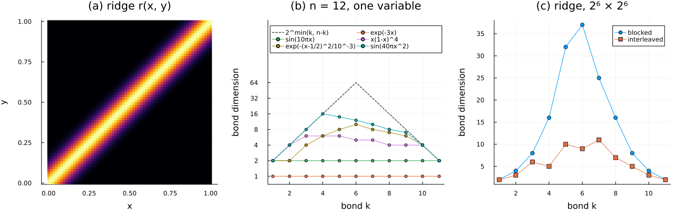

Functions in the QTT format
A function sampled on a grid of $2^n$ nodes is a vector of $2^n$ entries, and in $N$ dimensions the number of entries grows as $2^{nN}$. The QTT format rests on a single idea: we never store that vector. Instead, we reshape its index into $n$ binary digits, which turns the vector into a tensor with $n$ indices of dimension $d = 2$, and we store this tensor in the TT format (MPS), at a cost of $\mathcal{O}(n d \chi^2)$, where $\chi$ is the largest bond dimension. This is the quantized tensor train (QTT) of Sec. 2 of Torrente et al., Factorized approximate inverse preconditioners in the tensor train format ("the paper"), whose Eqs. (4) and (6) we use throughout. The compression is only as good as $\chi$ is small, so the question that this tutorial answers is which functions have a small $\chi$, and how the layout of the bits along the chain changes it.
We proceed in five steps. We first choose an architecture, which places the bits of every variable on the sites of the chain, and a grid, which gives the coordinates of the nodes. We then build the MPS of a function by cross interpolation, which needs only a few samples of the function and never the full vector, and evaluate it with sample, samples and integrate. Finally, we measure the bond dimensions of several functions and layouts.
using DifferenTT
using DifferenTT: sample # ITensorMPS also exports a `sample`; we mean DifferenTT's
using ITensors, ITensorMPS
using TensorCrossInterpolation: crossinterpolate2, optfirstpivot
using LinearAlgebra
using Plots
using Printf
using StableRNGs
rng = StableRNG(1234);Architectures: where the bits go
A grid of $2^n$ nodes along one variable is indexed by $i \in \{0, \dots, 2^n - 1\}$, which we expand in binary as in Eq. (6) of the paper,
\[i = \sum_{p=1}^{n} i_p \, 2^{n-p}, \qquad i_p \in \{0, 1\},\]
where $i_1$ is the most significant bit. Every bit becomes one site of the chain, so a QTTArchitecture is described by the number of bits of each variable. For one variable with $n = 10$ bits the chain has 10 sites of dimension 2, and the grid has $2^{10} = 1024$ nodes.
arch1 = QTTArchitecture((10,))
total_sites(arch1), site_dims(arch1), variable_dims(arch1)(10, [2, 2, 2, 2, 2, 2, 2, 2, 2, 2], (1024,))With several variables, the architecture also decides the order of their bits along the chain, and this order matters, since the bond dimension at a bond measures the correlations between the two halves of the chain that it separates (Sec. 2 of the paper). In the blocked layout, the default, the bits of each variable are contiguous. In the interleaved layout we take one bit of each variable in turn, so that the bits of the same scale sit next to each other. A negative number of bits reverses the order of the bits of that variable, which then starts with the least significant one, and the optional var_map permutes the blocks. The field site_map lists the variable carried by each site.
layouts = [
"blocked" => QTTArchitecture((3, 3)),
"interleaved" => QTTArchitecture((3, 3); interleaved=true),
"y reversed" => QTTArchitecture((3, -3)),
"y first" => QTTArchitecture((3, 3), Dict(1 => 2, 2 => 1)),
]
for (name, arch) in layouts
println(rpad(name, 12), "site_map = ", arch.site_map)
endblocked site_map = [1, 1, 1, 2, 2, 2]
interleaved site_map = [1, 2, 1, 2, 1, 2]
y reversed site_map = [1, 1, 1, 2, 2, 2]
y first site_map = [2, 2, 2, 1, 1, 1]To see the bits themselves, we ask which site values select the node $(x, y) = (1, 6)$ of a $2^3 \times 2^3$ grid with unit spacing, where $x = 001_2$ and $y = 110_2$. The function point_sequence returns the bit of every site (0-based), in site order.
for (name, arch) in layouts
grid = Grid(arch, (7.0, 7.0)) # 8 nodes per axis, so h = 1
println(rpad(name, 12), DifferenTT.point_sequence((1.0, 6.0), grid, arch))
endblocked [0, 0, 1, 1, 1, 0]
interleaved [0, 1, 0, 1, 1, 0]
y reversed [0, 0, 1, 0, 1, 1]
y first [1, 1, 0, 0, 0, 1]The blocked layout reads $001\,110$, the interleaved one alternates the bits of $x$ and $y$, the reversed layout writes $y$ from its least significant bit, $011$, and var_map places the block of $y$ first. The TT format without quantization is the TTArchitecture, with one site of dimension $n_i$ per variable; we use it in the tutorial on Poisson problems in $N$ dimensions.
Grids: the coordinates of the nodes
The architecture fixes the number of nodes, and a Grid gives them coordinates in the box $[0, L_1] \times \dots \times [0, L_N]$. By default the grid stores a node at each end of every axis, so the spacing is $h = L/(n - 1)$, which for $L = 1$ and $n = 1024$ gives $h = 1/1023$.
grid1 = Grid(arch1, 1.0)
grid1.dx, first(grid1.points[1]), last(grid1.points[1])((0.0009775171065493646,), 0.0, 1.0)A periodic axis needs a different spacing. Its node at $L$ is the image of the node at 0, so it is not stored, and the $n$ stored nodes are spaced by $h = L/n$; only then do the wrapped stencils of a PeriodicBC have period $L$. We ask for it with the periodic flag, which periodic_axes derives from the boundary conditions of a field. Note that without the flag a periodic axis keeps both end nodes, and the period of its stencils becomes $L + h$.
grid1p = Grid(arch1, 1.0; periodic=true)
grid1p.dx, last(grid1p.points[1])((0.0009765625,), 0.9990234375)Encoding a function by cross interpolation
Building the MPS of $f$ from its dense vector by successive SVDs would cost $\mathcal{O}(2^n)$ memory, which is exactly what we want to avoid. Tensor cross interpolation (TCI) builds it instead from the values of $f$ at a set of nodes that it selects (pivots), whose number grows with $n \chi^2$ and not with $2^n$ (Núñez Fernández et al., 2025). The library wraps TensorCrossInterpolation.jl in crossinterpolate2, which maps every multi-index that TCI requests to the coordinates of its node, so that we only write $f$ as a function of the coordinates.
As a first example we take $f(x) = e^{-x} \sin(8 \pi x)$ on $[0, 1]$. TCI starts from an initial pivot, by default the node at the origin, and fails if $f$ vanishes there, as this $f$ does. We therefore start from the pivot of TensorCrossInterpolation.optfirstpivot, the largest of a random search seeded by rng.
f(x) = exp(-x[1]) * sin(8π * x[1])
pivot = optfirstpivot(Float64, f, grid1, arch1; rng)
tci, ranks, errors = crossinterpolate2(Float64, f, grid1, arch1; initialpivots=[pivot])
ranks[end], errors[end](2, 1.4327973866703035e-15)TCI stops once its estimate of the interpolation error, relative to the largest value of $|f|$ that it sampled, is below tolerance ($10^{-8}$ by default). The result converts to an MPS, whose site indices we replace by those of the architecture, so that every tensor train of the problem shares the same sites.
sites1 = siteinds(arch1)
ψ = MPS(tci)
replace_siteinds!(ψ, sites1)
linkdims(ψ)9-element Vector{Int64}:
2
2
2
2
2
2
2
2
2Since $2^{10}$ entries are few, we can check the MPS against the dense vector of $f$ on the nodes. The function contract_mps returns the full vector with site 1 as the most significant index, i.e. in the order of the nodes.
x1 = grid1.points[1]
f_dense = [f((x,)) for x in x1]
norm(contract_mps(ψ) - f_dense) / norm(f_dense)9.05358575283278e-16The bond dimension of this MPS is 2 at every bond, and this is not a coincidence. On the nodes $x = h i$ the binary expansion of $i$ turns an exponential into a product of one factor per bit,
\[e^{a x} = \prod_{p=1}^{n} e^{a h 2^{n-p} i_p},\]
which is a tensor train of bond dimension 1 (Khoromskij, 2011). A sine is the sum of two complex exponentials, so it has bond dimension 2, and the product of the real exponential $e^{-x}$ with the sine keeps it at 2. Smooth functions are therefore cheap in the QTT format, and the following sections show how far this extends.
Evaluating the MPS: sample, samples and integrate
The entries of the MPS are the values of $f$ on the nodes, and they can be read without forming the vector. sample selects the bits of the node closest to a point on every site and contracts the chain, at a cost of $\mathcal{O}(n d \chi^2)$. Note that it does not interpolate between nodes: the point $x = 0.3$ lies between two nodes, and sample returns the value at the closest one.
k = argmin(abs.(x1 .- 0.3))
sample(ψ, (0.3,), grid1, arch1), f((x1[k],)), f((0.3,))(0.7050513627478241, 0.7050513627478243, 0.7045599961695289)samples evaluates the MPS on a regular grid of points, which is what we need for plots, and returns the coordinate ranges and the values. Every point is snapped to its closest node in the same way, so we compare the values with $f$ at those nodes.
ranges, values = samples(ψ, grid1, arch1, 200)
closest_node(x) = x1[argmin(abs.(x1 .- x))]
maximum(abs.(values .- [f((closest_node(x),)) for x in ranges[1]]))1.349614864309956e-15integrate returns the sum of all entries, by contracting every site with the vector of ones, again at a cost of $\mathcal{O}(n d \chi^2)$. It is not weighted by the spacing, so $h \sum_i f(x_i)$ approximates the integral. Since the grid stores both end nodes, this sum counts the two ends with full weight, and it is only a first-order rule; subtracting half of the two end values gives the trapezoidal rule, which is second-order accurate. We check both on $g(x) = e^{-3x}$, whose integral over $[0, 1]$ is $(1 - e^{-3})/3$, on a grid of $2^{12}$ nodes.
arch12 = QTTArchitecture((12,))
grid12 = Grid(arch12, 1.0)
sites12 = siteinds(arch12)
h = grid12.dx[1]
function qtt(func, arch, grid, sites; tolerance=1e-10)
pivot = optfirstpivot(Float64, func, grid, arch; rng)
tci, _, _ = crossinterpolate2(Float64, func, grid, arch; initialpivots=[pivot], tolerance)
mps = MPS(tci)
replace_siteinds!(mps, sites)
return mps
end
g(x) = exp(-3 * x[1])
γ = qtt(g, arch12, grid12, sites12)
exact = (1 - exp(-3)) / 3
riemann = h * integrate(γ)
trapezoid = riemann - h * (g((0.0,)) + g((1.0,))) / 2
@printf(
"h Σ g = %.10f (error %.1e), trapezoid = %.10f (error %.1e)\n",
riemann,
abs(riemann - exact),
trapezoid,
abs(trapezoid - exact)
)h Σ g = 0.3168658372 (error 1.3e-04), trapezoid = 0.3167376580 (error 1.4e-08)The first-order sum has an error of about $h (g(0) + g(1))/2 \approx 1.3 \cdot 10^{-4}$, and the trapezoidal rule an error of $\mathcal{O}(h^2)$, here $1.4 \cdot 10^{-8}$.
How bond dimensions behave
We now measure the bond dimensions of several functions on the grid of $2^{12}$ nodes, each built by TCI with a tolerance of $10^{-10}$. The bound to compare them with is that of a generic vector: the bond $k$ separates the $k$ most significant bits from the other $n - k$, so the corresponding unfolding is a $2^k \times 2^{n-k}$ matrix, whose rank is at most $2^{\min(k, n-k)}$, here up to 64 in the middle of the chain. A function whose bond dimensions reach this bound gains nothing from the QTT format.
gallery = [
"exp(-3x)" => x -> exp(-3 * x[1]),
"sin(10πx)" => x -> sin(10π * x[1]),
"x(1-x)^4" => x -> x[1] * (1 - x[1])^4,
"exp(-(x-1/2)^2/10^-3)" => x -> exp(-(x[1] - 0.5)^2 / 1e-3),
"sin(40πx^2)" => x -> sin(40π * x[1]^2),
]
gallery_dims = [name => linkdims(qtt(func, arch12, grid12, sites12)) for (name, func) in gallery]
for (name, dims) in gallery_dims
println(rpad(name, 24), dims)
endexp(-3x) [1, 1, 1, 1, 1, 1, 1, 1, 1, 1, 1]
sin(10πx) [2, 2, 2, 2, 2, 2, 2, 2, 2, 2, 2]
x(1-x)^4 [2, 4, 6, 6, 6, 5, 5, 4, 4, 4, 2]
exp(-(x-1/2)^2/10^-3) [2, 2, 4, 6, 8, 10, 8, 7, 6, 4, 2]
sin(40πx^2) [2, 4, 8, 16, 14, 12, 10, 8, 7, 4, 2]The exponential and the sine have bond dimensions 1 and 2, as derived above. A polynomial of degree $m$ has bond dimension at most $m + 1$ (Khoromskij, 2011), which the quintic $x(1-x)^4$ reaches. The narrow Gaussian and the chirp $\sin(40 \pi x^2)$, whose local frequency grows along the axis, need more: their bond dimensions grow with the number of scales at which the function has structure, but stay well below the bound of 64. Note that these are the bond dimensions that TCI needs to reach its tolerance, which are close to, but not always equal to, those of an SVD truncation of the dense vector.
The number of evaluations of the function tells the same story. We count them for the chirp on grids of $2^{12}$ and $2^{20}$ nodes.
for nbits in (12, 20)
arch = QTTArchitecture((nbits,))
grid = Grid(arch, 1.0)
calls = Ref(0)
chirp(x) = (calls[] += 1; sin(40π * x[1]^2))
start = optfirstpivot(Float64, chirp, grid, arch; rng)
calls[] = 0
chirp_tci, _, _ = crossinterpolate2(Float64, chirp, grid, arch; initialpivots=[start], tolerance=1e-10)
χ = maximum(linkdims(MPS(chirp_tci)))
@printf("n = %2d: %6d evaluations for %8d nodes, χ = %d\n", nbits, calls[], 2^nbits, χ)
endn = 12: 31437 evaluations for 4096 nodes, χ = 16
n = 20: 41158 evaluations for 1048576 nodes, χ = 16TCI does not cache the values it has already computed, so on the small grid it evaluates the function more often than there are nodes. On the grid of $2^{20}$ nodes, however, it needs only a few percent of them, with the same bond dimension, since the number of evaluations grows with the number of sites and not with the number of nodes.
The order of the bits matters as well. Reversing the bits of a variable reverses the chain, so the bond profile is mirrored, as we see for the chirp.
χ_forward = linkdims(qtt(gallery[5].second, arch12, grid12, sites12))
arch12r = QTTArchitecture((-12,))
χ_reversed = linkdims(qtt(gallery[5].second, arch12r, Grid(arch12r, 1.0), siteinds(arch12r)))
χ_forward, χ_reversed([2, 4, 8, 16, 14, 12, 10, 8, 7, 4, 2], [2, 4, 7, 8, 10, 12, 14, 16, 8, 4, 2])In two dimensions the choice between the blocked and the interleaved layouts can change the bond dimension by much more. We take the Gaussian ridge $r(x, y) = e^{-(x - y)^2/0.01}$ along the diagonal of the unit square, on a grid of $2^6 \times 2^6$ nodes. In the blocked layout the middle bond separates $x$ from $y$, and its bond dimension is the rank of the matrix $r(x_i, y_j)$, which is large for a narrow ridge. In the interleaved layout every bond separates the coarse scales of both variables from their fine scales, and the ridge, which depends on $x - y$ only, couples the two variables mostly at the same scale.
ridge(x) = exp(-(x[1] - x[2])^2 / 0.01)
arch_blocked = QTTArchitecture((6, 6))
arch_interleaved = QTTArchitecture((6, 6); interleaved=true)
grid_blocked = Grid(arch_blocked, (1.0, 1.0))
grid_interleaved = Grid(arch_interleaved, (1.0, 1.0))
ρ_blocked = qtt(ridge, arch_blocked, grid_blocked, siteinds(arch_blocked))
ρ_interleaved = qtt(ridge, arch_interleaved, grid_interleaved, siteinds(arch_interleaved))
linkdims(ρ_blocked), linkdims(ρ_interleaved)([2, 4, 8, 16, 32, 37, 25, 16, 8, 4, 2], [2, 3, 6, 5, 10, 9, 11, 7, 5, 3, 2])Both MPS represent the same $2^{12}$ values, as a sampled comparison confirms.
ranges2, ridge_blocked = samples(ρ_blocked, grid_blocked, arch_blocked, 64)
_, ridge_interleaved = samples(ρ_interleaved, grid_interleaved, arch_interleaved, 64)
ridge_exact = [ridge((x, y)) for x in ranges2[1], y in ranges2[2]]
maximum(abs.(ridge_blocked .- ridge_exact)), maximum(abs.(ridge_interleaved .- ridge_exact))(3.89291411606596e-11, 1.538829178486597e-13)The largest bond dimension of the interleaved layout is about three times smaller than that of the blocked one. Since the storage scales as $\chi^2$, the difference in the number of stored entries is larger still: we count them below, next to the $2^{12}$ entries of the dense vector.
nparams(mps) = sum(dim, mps)
nparams(ρ_blocked), nparams(ρ_interleaved), 2^12(6722, 860, 4096)The blocked MPS stores more numbers than the dense vector, while the interleaved one stores about eight times fewer than the blocked one. This is a property of this function, not a rule: a product $u(x) v(y)$ has bond dimension 1 at the middle bond of the blocked layout, while the interleaved layout spreads its two factors over every bond. Choosing the layout is therefore part of formulating a problem in the QTT format.
Summary
The figure collects the bond profiles of this tutorial: (a) the ridge, sampled from its interleaved MPS; (b) the bond dimensions of the one-dimensional functions against the bound $2^{\min(k, n-k)}$ of a generic vector; and (c) the ridge in the blocked and the interleaved layouts.
panel_a = heatmap(
ranges2[1],
ranges2[2],
ridge_interleaved';
xlabel="x",
ylabel="y",
aspect_ratio=:equal,
title="(a) ridge r(x, y)",
colorbar=false,
)
bonds = 1:11
panel_b = plot(
bonds,
2.0 .^ min.(bonds, 12 .- bonds);
label="2^min(k, n-k)",
color=:black,
linestyle=:dash,
yscale=:log2,
ylims=(0.7, 2^10),
yticks=(2 .^ (0:6), string.(2 .^ (0:6))),
xlabel="bond k",
ylabel="bond dimension",
title="(b) n = 12, one variable",
legend=:top,
legendcolumns=2,
)
for (name, dims) in gallery_dims
plot!(panel_b, bonds, dims; label=name, marker=:circle, markersize=3)
end
panel_c = plot(
1:11,
linkdims(ρ_blocked);
label="blocked",
marker=:circle,
xlabel="bond k",
ylabel="bond dimension",
title="(c) ridge, 2⁶ × 2⁶",
)
plot!(panel_c, 1:11, linkdims(ρ_interleaved); label="interleaved", marker=:square)
plot(panel_a, panel_b, panel_c; layout=(1, 3), size=(1300, 400), margin=5Plots.mm)